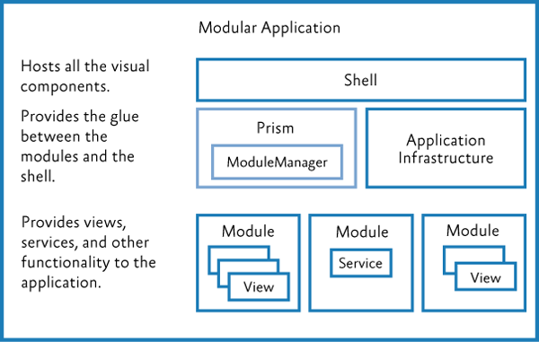
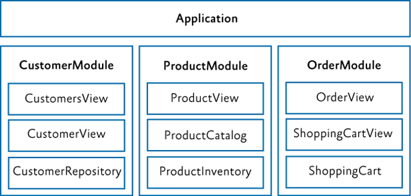
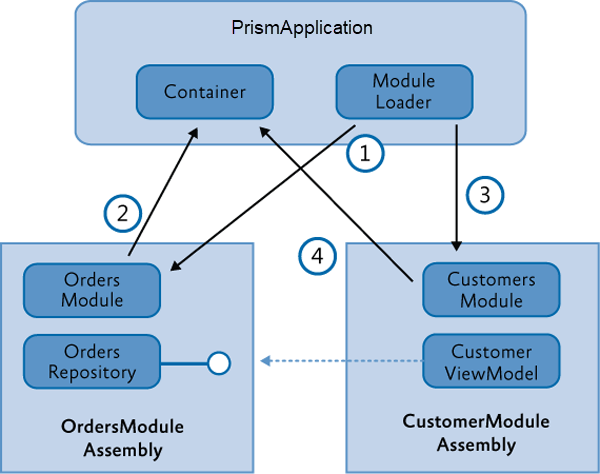

Modular Application Development Using Prism Library
A modular application is an application that is divided into a set of loosely coupled functional units (named modules) that can be integrated into a larger application. A client module encapsulates a portion of the application's overall functionality and typically represents a set of related concerns. It can include a collection of related components, such as application features, including user interface and business logic, or pieces of application infrastructure, such as application-level services for logging or authenticating users. Modules are independent of one another but can communicate with each other in a loosely coupled fashion. Using a modular application design makes it easier for you to develop, test, deploy, and maintain your application.
For example, consider a personal banking application. The user can access a variety of functions, such as transferring money between accounts, paying bills, and updating personal information from a single user interface (UI). However, behind the scenes, each of these functions is encapsulated within a discrete module. These modules communicate with each other and with back-end systems such as database servers and web services. Application services integrate the various components within each of the different modules and handle the communication with the user. The user sees an integrated view that looks like a single application.
The following illustration shows a design of a modular application with multiple modules.

Benefits of Building Modular Applications
You are probably already building a well-architected application using assemblies, interfaces, and classes, and employing good object-oriented design principles. Even so, unless great care is taken, your application design may still be "monolithic" (where all the functionality is implemented in a tightly coupled way within the application), which can make the application difficult to develop, test, extend, and maintain.
The modular application approach, on the other hand, can help you to identify the large scale functional areas of your application and allow you to develop and test that functionality independently. This can make development and testing easier, but it can also make your application more flexible and easier to extend in the future. The benefit of the modular approach is that it can make your overall application architecture more flexible and maintainable because it allows you to break your application into manageable pieces. Each piece encapsulates specific functionality, and each piece is integrated through clear but loosely coupled communication channels.
Prism's Support for Modular Application Development
Prism provides support for modular application development and for run-time module management within your application. Using Prism's modular development functionality can save you time because you don't have to implement and test your own modularity framework. Prism supports the following modular application development features:
- A module catalog for registering named modules and each module's location; you can create the module catalog in the following ways:
- By defining modules in code or Extensible Application Markup Language (XAML)
- By discovering modules in a directory so you can load all your modules without explicitly defining in a centralized catalog
- By defining modules in a configuration file
- Declarative metadata attributes for modules to support initialization mode and dependencies
- For module loading:
- Dependency management, including duplicate and cycle detection to ensure modules are loaded in the correct order and only loaded and initialized once
- On-demand and background downloading of modules to minimize application start-up time; the rest of the modules can be loaded and initialized in the background or when they are required
- Integration with dependency injection containers to support loose coupling between modules
Core Concepts
This section introduces the core concepts related to modularity in Prism, including the IModule interface, the module loading process, the module catalog, communicating between modules, and dependency injection containers.
IModule: The Building Block of Modular Applications
A module is a logical collection of functionality and resources that is packaged in a way that can be separately developed, tested, deployed, and integrated into an application. A package can be one or more assemblies. Each module has a central class that is responsible for initializing the module and integrating its functionality into the application. That class implements the IModule interface.
Note: The presence of a class that implements the IModule interface is enough to identify the package as a module.
The IModule interface has two methods, named OnInitialized and RegisterTypes. Both take a reference to the dependency injection container as a parameter. When a module is loaded into the application, RegisterTypes is called first and should be used to register any services or functionality that the module implements. Next the OnInitialized method is called. It is here that things like view registrations or any other module initialization code should be performed.
public class MyModule : IModule
{
public void RegisterTypes(IContainerRegistry containerRegistry)
{
// register with the container that SomeService implements ISomeService
// ISomeService is defined in the Infrastructure module, see app architecture diagram
containerRegistry.Register<MyApplication.Infrastructure.ISomeService, SomeService>();
}
public void OnInitialized(IContainerProvider containerProvider)
{
// use the containerProvider to retrieve the instance of the Prism RegionManager
// and register the view in this module with a specific region in the app
var regionManager = containerProvider.Resolve<IRegionManager>();
regionManager.RegisterViewWithRegion("MyModuleView", typeof(Views.ThisModuleView));
}
}
Module Lifecycle
The module loading process in Prism includes the following sequence:
- Registering Modules are created by implementing the IModule interface inside of a class.
- Discovering modules. The modules to be loaded at run-time for a particular application are defined in a Module catalog. The catalog contains information about the modules to be loaded, such as their location, and the order in which they are to be loaded.
- Loading modules. The assemblies that contain the modules are loaded into memory.
- Initializing modules. The modules are then initialized. This means creating instances of the module class and calling the
RegisterTypesandOnInitializedmethods on them via theIModuleinterface.
Module Catalog
The ModuleCatalog holds information about the modules that can be used by the application. The catalog is essentially a collection of ModuleInfo classes. Each module is described in a ModuleInfo class that records the name, type, and location, among other attributes of the module. There are several typical approaches to filling the ModuleCatalog with ModuleInfo instances:
- Registering modules in code
- Registering modules in XAML
- Registering modules in a configuration file
- Discovering modules in a local directory on disk
The registration and discovery mechanism you should use depends on what your application needs. Using a configuration file or XAML file allows your application to not require references to the modules. Using a directory can allow an application to discover modules without having to specify them in a file.
Controlling When to Load a Module
Prism applications can initialize modules as soon as possible, known as "when available," or when the application needs them, known as "on-demand." Consider the following guidelines for loading modules:
- Modules required for the application to run must be loaded with the application and initialized when the application runs.
- Modules containing features that are rarely used (or are support modules that other modules optionally depend upon) can be loaded and initialized on-demand.
Consider how you are partitioning your application, common usage scenarios and application start-up time for determining how to configure your app for initialization.
Integrate Modules With The Application
Each of the Prism.DryIoc.[Platform] and Prism.Unity.[Platform] assemblies provide an Application based class that is used as the base class for the App class. Override the virtual method CreateModuleCatalog to create the desired type of module catalog.
For each of the modules in the app, implement the IModuleInfo interface to register module types and services. The following are common things to do to when integrating a module into the app:
- Add the module's views to the application's navigation structure. This is common when building composite UI applications using view discovery or view injection.
- Subscribe to application level events or services.
- Register shared services with the application's dependency injection container.
Communicate Between Modules
Even though modules should have low coupling between each other, it is common for modules to communicate with each other. There are several loosely coupled communication patterns, each with their own strengths. Typically, combinations of these patterns are used to create the resulting solution. The following are some of these patterns:
- Loosely coupled events. A module can broadcast that a certain event has occurred. Other modules can subscribe to those events so they will be notified when the event occurs. Loosely coupled events are a lightweight manner of setting up communication between two modules; therefore, they are easily implemented. However, a design that relies too heavily on events can become hard to maintain, especially if many events have to be orchestrated together to fulfill a single task. In that case, it might be better to consider a shared service.
- Shared services. A shared service is a class that can be accessed through a common interface. Typically, shared services are found in a shared assembly and provide system-wide services, such as authentication, logging, or configuration.
- Shared resources. If you do not want modules to directly communicate with each other, you can also have them communicate indirectly through a shared resource, such as a database or a set of web services.
Dependency Injection and Modular Applications
Containers like Unity and DryIoc allow you to easily use Inversion of Control (IoC) and Dependency Injection, which are powerful design patterns that help to compose components in a loosely-coupled fashion. It allows components to obtain references to the other components that they depend on without having to hard code those references, thereby promoting better code re-use and improved flexibility. Dependency injection is very useful when building a loosely coupled, modular application. Prism is designed to be agnostic about the dependency injection container used to compose components within an application.
Regardless of which of the three containers is chosen, Prism will use the container to construct and initialize each of the modules so that they remain loosely coupled.
Key Decisions
The first decision you will make is whether you want to develop a modular solution. There are numerous benefits of building modular applications as discussed in the previous section, but there is a commitment in terms of time and effort that you need to make to reap these benefits. If you decide to develop a modular solution, there are several more things to consider:
- Determine the framework you will use. You can create your own modularity framework, use Prism, or another framework.
- Determine how to organize your solution. Approach a modular architecture by defining the boundaries of each module, including what assemblies are part of each module. You can decide to use modularity to ease the development, as well as to have control over how the application will be deployed or if it will support a plug-in or extensible architecture.
- Determine how to partition your modules. Modules can be partitioned differently based on requirements, for example, by functional areas, provider modules, development teams and deployment requirements.
- Determine the core services that the application will provide to all modules. An example is that core services could be an error reporting service or an authentication and authorization service.
- If you are using Prism, determine what approach you are using to register modules in the module catalog. For WPF, you can register modules in code, XAML, in a configuration file, or discovering modules in a local directory on disk.
- Determine your module communication and dependency strategy. Modules will need to communicate with each other, and you will need to deal with dependencies between modules.
- Determine your dependency injection container. Typically, modular systems require dependency injection, inversion of control, or service locator to allow the loose coupling and dynamic loading and creating of modules. Prism allows a choice between using Unity or DryIoc and provides libraries for Unity and DryIoc based applications.
- Minimize application startup time. Think about on-demand and background downloading of modules to minimize application startup time.
- Determine deployment requirements. You will need to think about how you intend to deploy your application.
The next sections provide details about some of these decisions.
Partition Your Application into Modules
When you develop your application in a modularized fashion, you structure the application into separate client modules that can be individually developed, tested, and deployed. Each module will encapsulate a portion of your application's overall functionality. One of the first design decisions you will have to make is to decide how to partition your application's functionality into discrete modules.
A module should encapsulate a set of related concerns and have a distinct set of responsibilities. A module can represent a vertical slice of the application or a horizontal service layer.

An application with modules organized around vertical slices

An application with modules organized around horizontal layers
A larger application may have modules organized with vertical slices and horizontal layers. Some examples of modules include the following:
- A module that contains a specific application feature, such as a module that serves news and/or announcements
- A module that contains a specific sub-system or functionality for a set of related use cases, such as purchasing, invoicing, or general ledger
- A module that contains infrastructure services, such as logging, caching, and authorization services, or web services
- A module that contains services that invoke line-of-business (LOB) systems, such as Siebel CRM and SAP, in addition to other internal systems
A module should have a minimal set of dependencies on other modules. When a module has a dependency on another module, it should be loosely coupled by using interfaces defined in a shared library instead of concrete types, or by using the EventAggregator to communicate with other modules via EventAggregator event types.
The goal of modularity is to partition the application in such a way that it remains flexible, maintainable, and stable even as features and technologies are added and removed. The best way to accomplish this is to design your application so that modules are as independent as possible, have well defined interfaces, and are as isolated as possible.
Determine Ratio of Projects to Modules
There are several ways to create and package modules. The recommended and most common way is to create a single assembly per module. This helps keep logical modules separate and promotes proper encapsulation. It also makes it easier to talk about the assembly as the module boundary as well as the packaging of how you deploy the module. However, nothing prevents a single assembly from containing multiple modules, and in some cases this may be preferred to minimize the number of projects in your solution. For a large application, it is not uncommon to have 10–50 modules. Separating each module into its own project adds a lot of complexity to the solution and can slow down Visual Studio performance. Sometimes it makes sense to break a module or set of modules into their own solution to manage this if you choose to stick to one module per assembly/Visual Studio project.
Use Dependency Injection for Loose Coupling
A module may depend on components and services provided by the host application or by other modules. Prism supports the ability to register dependencies between modules so that they are loaded and initialized in the right order. Prism also supports the initialization of modules when they are loaded into the application. During module initialization, the module can retrieve references to the additional components and services it requires, and/or register any components and services that it contains in order to make them available to other modules.
A module should use an independent mechanism to get instances of external interfaces instead of directly instantiating a concrete type, for example by using a dependency injection container or factory service. Dependency injection containers such as Unity or DryIoc allow a type to automatically acquire instances of the interfaces and types it needs through dependency injection. Prism integrates with Unity and DryIoc to allow a module to easily use dependency injection.
The following diagram shows the typical sequence of operations when modules are loaded that need to acquire or register references to the components and services.

In this example, the OrdersModule assembly defines an OrdersRepository class (along with other views and classes that implement order functionality). The CustomerModule assembly defines a CustomersViewModel class which depends on the OrdersRepository, typically based on an interface exposed by the service. The application startup and bootstrapping process contains the following steps:
- The
Appclass that is derived fromPrismApplicationstarts the module initialization process, and the module loader loads and initializes theOrdersModule. - In the initialization of the
OrdersModule, it registers theOrdersRepositorywith the container. - The module loader then loads the
CustomersModule. The order of module loading can be specified by the dependencies in the module metadata. - The
CustomersModuleconstructs an instance of theCustomerViewModelby resolving it through the container. TheCustomerViewModelhas a dependency on theOrdersRepository(typically based on its interface) and indicates it through constructor or property injection. The container injects that dependency in the construction of the view model based on the type registered by theOrdersModule. The net result is an interface reference from theCustomerViewModelto theOrderRepositorywithout tight coupling between those classes.
Note: The interface used to expose the OrderRepository (IOrderRepository) could reside in a separate "shared services" assembly or an "orders services" assembly that only contains the service interfaces and types required to expose those services. This way, there is no hard dependency between the CustomersModule and the OrdersModule.
Note that both modules have an implicit dependency on the dependency injection container. This dependency is injected during module construction in the module loader.
Core Scenarios
This section describes the common scenarios you will encounter when working with modules in your application. These scenarios include defining a module, registering and discovering modules, loading modules, initializing modules, specifying module dependencies, loading modules on demand, downloading remote modules in the background, and detecting when a module has already been loaded. You can register and discover modules in code, in a XAML or application configuration file, or by scanning a local directory.
Defining a Module
A module is a logical collection of functionality and resources that is packaged in a way that can be separately developed, tested, deployed, and integrated into an application. Each module has a central class that is responsible for initializing the module and integrating its functionality into the application. That class implements the IModule interface, as shown here.
public class MyModule : IModule
{
public void RegisterTypes(IContainerRegistry containerRegistry)
{
}
public void OnInitialized(IContainerProvider containerProvider)
{
}
}
Implement RegisterTypes to handle the registration with the dependency injection container all of the services that this module implements.
How OnInitialized method is implemented will depend on the requirements of your application. Here is where you can register your views and do any other module level initialize that may be required.
Registering and Discovering Modules
The modules that an application can load are defined in a module catalog. The Prism Module Loader uses the module catalog to determine which modules are available to be loaded into the application, when to load them, and in which order they are to be loaded.
The module catalog is represented by a class that implements the IModuleCatalog interface. The module catalog class is created by the PrismApplication base class during application initialization. Prism provides different implementations of module catalog for you to choose from. You can also populate a module catalog from another data source by calling the AddModule method or by deriving from ModuleCatalog to create a module catalog with customized behavior.
By default, the App class, derived from PrismApplication, creates a ModuleCatalog in the CreateModuleCatalog method. In WPF and UNO, you can override this method to use different types of ModuleCatalog.
Registering Modules in Code
The most basic module catalog, and default, is provided by the ModuleCatalog class. You can use this module catalog to programmatically register modules by specifying the module class type. You can also programmatically specify the module name and initialization mode. To register the module directly with the ModuleCatalog class, call the AddModule method in your application's PrismApplication derived App class. Override ConfigureModuleCatalog to add your modules. An example is shown in the following code.
protected override void ConfigureModuleCatalog()
{
Type moduleCType = typeof(ModuleC);
ModuleCatalog.AddModule(new ModuleInfo()
{
ModuleName = moduleCType.Name,
ModuleType = moduleCType.AssemblyQualifiedName,
});
}
Note: If your application has a direct reference to the module type, you can add it by type as shown above; otherwise you need to provide the fully qualified type name and the location of the assembly.
To specify dependencies in code, use Prism supplied declarative attributes.
[Module(ModuleName = "ModuleA")]
[ModuleDependency("ModuleD")]
public class ModuleA : IModule
{
...
}
To specify on-demand loading in code, add the InitializationMode property to your new instance of ModuleInfo. Using the code below:
Type moduleCType = typeof(ModuleC);
ModuleCatalog.AddModule(new ModuleInfo()
{
ModuleName = moduleCType.Name,
ModuleType = moduleCType.AssemblyQualifiedName,
InitializationMode = InitializationMode.OnDemand,
});
Registering Modules Using a XAML File
You can define a module catalog declaratively by specifying it in a XAML file. The XAML file specifies what kind of module catalog class to create and which modules to add to it. Usually, the .xaml file is added as a resource to your shell project. The module catalog is created by the App with a call to the CreateFromXaml method. From a technical perspective, this approach is very similar to defining the ModuleCatalog in code because the XAML file simply defines a hierarchy of objects to be instantiated.
The following code example shows a XAML file specifying a module catalog.
<--! ModulesCatalog.xaml -->
<Modularity:ModuleCatalog xmlns="http://schemas.microsoft.com/winfx/2006/xaml/presentation"
xmlns:x="http://schemas.microsoft.com/winfx/2006/xaml"
xmlns:sys="clr-namespace:System;assembly=mscorlib"
xmlns:Modularity="clr-namespace:Microsoft.Practices.Prism.Modularity;assembly=Microsoft.Practices.Prism">
<Modularity:ModuleInfoGroup Ref="file://DirectoryModules/ModularityWithMef.Desktop.ModuleB.dll" InitializationMode="WhenAvailable">
<Modularity:ModuleInfo ModuleName="ModuleB" ModuleType="ModularityWithMef.Desktop.ModuleB, ModularityWithMef.Desktop.ModuleB, Version=1.0.0.0, Culture=neutral, PublicKeyToken=null" />
</Modularity:ModuleInfoGroup>
<Modularity:ModuleInfoGroup InitializationMode="OnDemand">
<Modularity:ModuleInfo Ref="file://ModularityWithMef.Desktop.ModuleE.dll" ModuleName="ModuleE" ModuleType="ModularityWithMef.Desktop.ModuleE, ModularityWithMef.Desktop.ModuleE, Version=1.0.0.0, Culture=neutral, PublicKeyToken=null" />
<Modularity:ModuleInfo Ref="file://ModularityWithMef.Desktop.ModuleF.dll" ModuleName="ModuleF" ModuleType="ModularityWithMef.Desktop.ModuleF, ModularityWithMef.Desktop.ModuleF, Version=1.0.0.0, Culture=neutral, PublicKeyToken=null">
<Modularity:ModuleInfo.DependsOn>
<sys:String>ModuleE</sys:String>
</Modularity:ModuleInfo.DependsOn>
</Modularity:ModuleInfo>
</Modularity:ModuleInfoGroup>
<!-- Module info without a group -->
<Modularity:ModuleInfo Ref="file://DirectoryModules/ModularityWithMef.Desktop.ModuleD.dll" ModuleName="ModuleD" ModuleType="ModularityWithMef.Desktop.ModuleD, ModularityWithMef.Desktop.ModuleD, Version=1.0.0.0, Culture=neutral, PublicKeyToken=null" />
</Modularity:ModuleCatalog>
Note:
ModuleInfoGroupsprovide a convenient way to group modules that are in the same assembly, are initialized in the same way, or only have dependencies on modules in the same group. Dependencies between modules can be defined within modules in the sameModuleInfoGroup; however, you cannot define dependencies between modules in differentModuleInfoGroups. Putting modules inside module groups is optional. The properties that are set for a group will be applied to all its contained modules. Note that modules can also be registered without being inside a group._
Example on creating the catalog from a XAML file is below:
protected override IModuleCatalog CreateModuleCatalog()
{
return ModuleCatalog.CreateFromXaml(new Uri("/MyProject;component/ModulesCatalog.xaml", UriKind.Relative));
}
To specify dependencies in XAML, follow the example below:
<-- ModulesCatalog.xaml -->
<Modularity:ModuleInfo Ref="file://ModuleE.dll" moduleName="ModuleE" moduleType="ModuleE.Module, ModuleE, Version=1.0.0.0, Culture=neutral, PublicKeyToken=null" />
<Modularity:ModuleInfo Ref="file://ModuleF.dll" moduleName="ModuleF" moduleType="ModuleF.Module, ModuleF, Version=1.0.0.0, Culture=neutral, PublicKeyToken=null">
<Modularity:ModuleInfo.DependsOn>
<sys:String>ModuleE</sys:String>
</Modularity:ModuleInfo.DependsOn>
</Modularity:ModuleInfo>
To specify on-demand loading of your module, add the startupLoaded attribute to the Modularity:ModuleInfo element.
<Modularity:ModuleInfo Ref="file://ModuleE.dll" moduleName="ModuleE" moduleType="ModuleE.Module, ModuleE, Version=1.0.0.0, Culture=neutral, PublicKeyToken=null" startupLoaded="false" />
Registering Modules Using a Configuration File
In WPF, it is possible to specify the module information in the App.config file. The advantage of this approach is that this file is not compiled into the application. This makes it very easy to add or remove modules at run time without recompiling the application.
The following code example shows a configuration file specifying a module catalog.
<!-- ModularityWithUnity.Desktop\\app.config -->
<xml version="1.0" encoding="utf-8" ?>
<configuration>
<configSections>
<section name="modules" type="Prism.Modularity.ModulesConfigurationSection, Prism.Wpf"/>
</configSections>
<modules>
<module assemblyFile="ModularityWithUnity.Desktop.ModuleE.dll" moduleType="ModularityWithUnity.Desktop.ModuleE, ModularityWithUnity.Desktop.ModuleE, Version=1.0.0.0, Culture=neutral, PublicKeyToken=null" moduleName="ModuleE" startupLoaded="false" />
<module assemblyFile="ModularityWithUnity.Desktop.ModuleF.dll" moduleType="ModularityWithUnity.Desktop.ModuleF, ModularityWithUnity.Desktop.ModuleF, Version=1.0.0.0, Culture=neutral, PublicKeyToken=null" moduleName="ModuleF" startupLoaded="false">
<dependencies>
<dependency moduleName="ModuleE"/>
</dependencies>
</module>
</modules>
</configuration>
Note: Even if your assemblies are in the global assembly cache or in the same folder as the application, the
assemblyFileattribute is required. The attribute is used to map themoduleTypeto the correctIModuleTypeLoaderto use.
In your application's App class, you need to specify that the configuration file is the source for your ModuleCatalog. To do this, override the CreateModuleCatalog method and return an instance of the ConfigurationModuleCatalog class.
protected override IModuleCatalog CreateModuleCatalog()
{
return new ConfigurationModuleCatalog();
}
Note: You can still add modules to a
ConfigurationModuleCatalogin code. You can use this, for example, to make sure that the modules that your application absolutely needs to function are defined in the catalog.
To specify dependencies in the app.config file:
<-- app.config -->
<modules>
<module assemblyFile="ModuleE.dll" moduleType="ModuleE.Module, ModuleE, Version=1.0.0.0, Culture=neutral, PublicKeyToken=null" moduleName="moduleE" />
<module assemblyFile="ModuleF.dll" moduleType="ModuleF.Module, ModuleF, Version=1.0.0.0, Culture=neutral, PublicKeyToken=null" moduleName="moduleF">
<dependencies>
<dependency moduleName="moduleE" />
</dependencies>
</module>
</modules>
To specify on-demand loading using a configuration file, set the startupLoaded attribute of the module element to false.
<module assemblyFile="ModularityWithUnity.Desktop.ModuleE.dll" moduleType="ModularityWithUnity.Desktop.ModuleE, ModularityWithUnity.Desktop.ModuleE, Version=1.0.0.0, Culture=neutral, PublicKeyToken=null" moduleName="ModuleE" startupLoaded="false" />
Discovering Modules in a Directory
The Prism DirectoryModuleCatalog class allows you to specify a local directory as a module catalog in WPF. This module catalog will scan the specified folder and search for assemblies that define the modules for your application. To use this approach, you will need to use declarative attributes on your module classes to specify the module name and any dependencies that they have. The following code example shows a module catalog that is populated by discovering assemblies in a directory.
protected override IModuleCatalog CreateModuleCatalog()
{
return new DirectoryModuleCatalog() {ModulePath = @".\\Modules"};
}
To specify dependencies, use the same method as if you were using code.
To handle loading on demand or at startup, update the Module attribute as follows:
[Module(ModuleName = "ModuleA", OnDemand = true)]
[ModuleDependency("ModuleD")]
public class ModuleA : IModule
{
...
}
Other Modularity Items of Note
Requesting On-Demand loading of Module
After a module is specified as on-demand, the application can ask the module to be loaded. The code that wants to initiate the loading needs to obtain a reference to the IModuleManager service registered with the container in the App class.
An explicit load of a module can be performed by the following code:
public class SomeViewModel : BindableBase
{
private IModuleManager _moduleManager = null;
public SomeViewModel(IModuleManager moduleManager)
{
// use dependency injection to get the module manager
_moduleManager = moduleManager;
}
private void LoadSomeModule(string moduleName)
{
_moduleManager.LoadModule(moduleName);
}
}
Detecting When a Module is Loaded
The ModuleManager service provides an event for applications to track when a module loads or fails to load.
public class SomeViewModel : BindableBase
{
private IModuleManager _moduleManager = null;
public SomeViewModel(IModuleManager moduleManager)
{
_moduleManager = moduleManager;
_moduleManager.LoadModuleCompleted += _moduleManager_LoadModuleCompleted;
}
private void _moduleManager_LoadModuleCompleted(object sender, LoadModuleCompletedEventArgs e)
{
// ...
}
}
To keep the application and modules loosely coupled, the application should avoid using this event to integrate the module with the application. Instead, the module's RegisterTypes and OnInitialized should handle integrating with the application.
The LoadModuleCompletedEventArgs contains an IsErrorHandled property. If a module fails to load and the application wants to prevent the ModuleManager from logging the error and throwing an exception, it can set this property to true.
Note: After a module is loaded and initialized, the module assembly cannot be unloaded. The module instance reference will not be held by the Prism libraries, so the module class instance may be garbage collected after initialization is complete.